Container
Геометрія контейнера формує робоче середовище для субстрату, води й повітря.
BB610 Garden об’єднує контейнерні системи, полив, дренаж і моніторинг для професійних ягідних господарств.
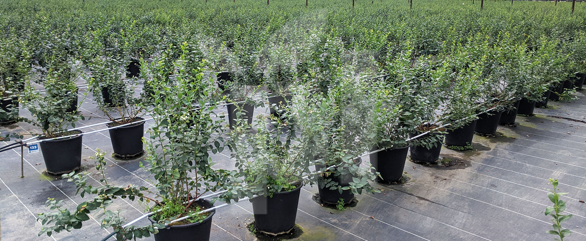
Garden не дублює магазин і не копіює сайт виробника. Тут продукт розглядається через технологічну задачу: коренева зона, субстрат, полив, аерація, дренаж і контроль.
Ключова система — PlantLogic →PlantLogic — ключова продуктова система всередині BB610 Garden. Контейнер не показується ізольовано: він працює разом із поливом, дренажем і моніторингом.
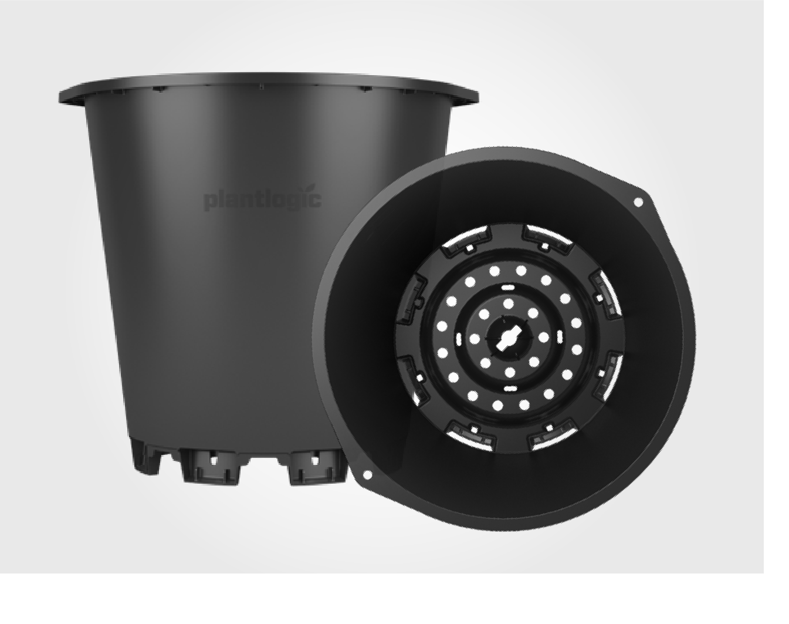
Геометрія контейнера формує робоче середовище для субстрату, води й повітря.
Розміщення поливної лінії та повторюваність подачі води є частиною конструктивної логіки.
Надлишок води відводиться або збирається у контрольований дренажний потік.
Лізиметрія дає контрольну пробу для оцінки об’єму, pH та EC зовнішніми приладами.
У напрямку Blueberry поєднуються круглі й квадратні контейнери, U-Groove, Drainage Collection та Zephyr V2. Вибір залежить від технології господарства, а не лише від літражу.
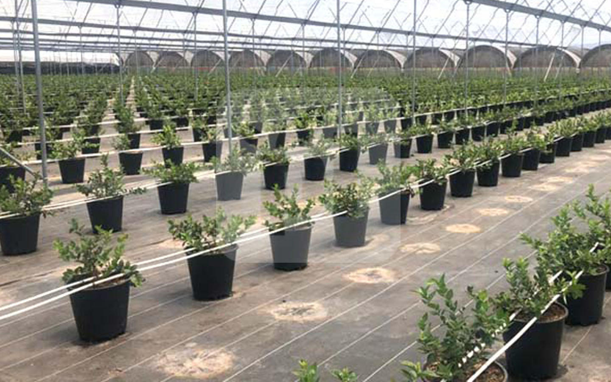
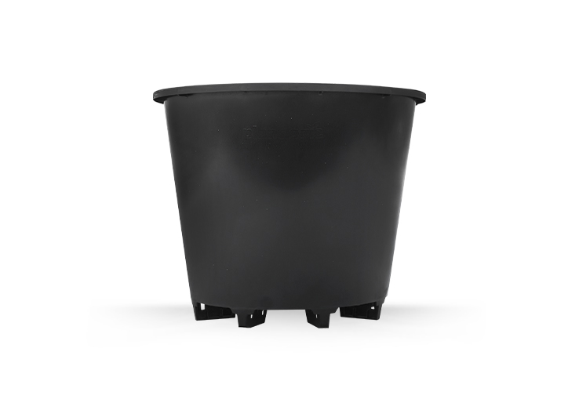
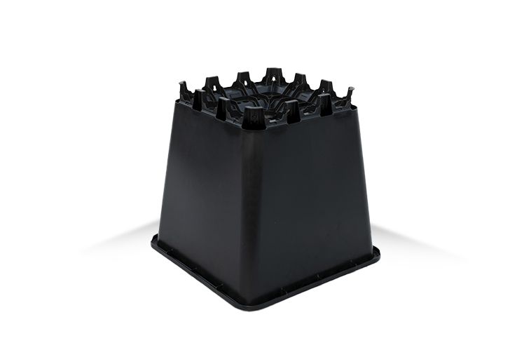
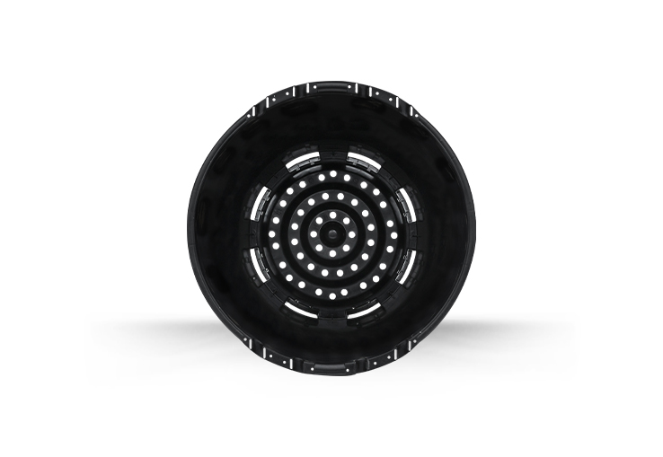
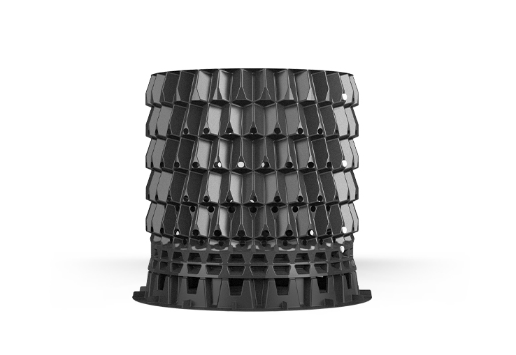
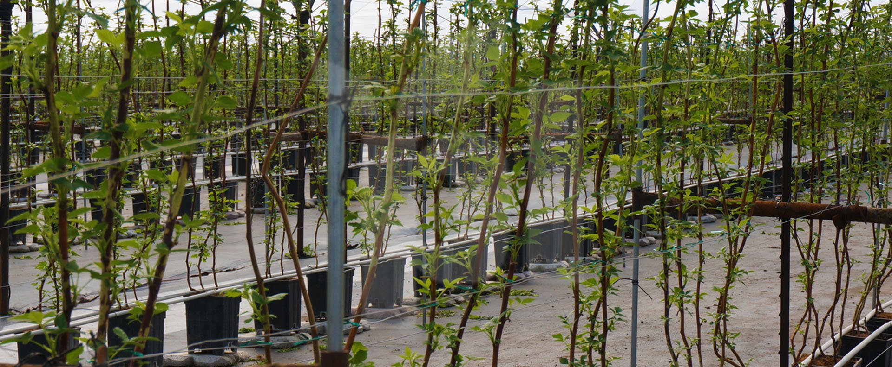
Для Rubus важливо розділяти production, cold storage / long cane, drainage collection та компактні виробничі формати. Тому цей напрямок не повторює Blueberry в іншій картинці.
Drainage Collection відокремлює звичайне відведення надлишкової води від контрольованого потоку, який можна збирати, вимірювати та аналізувати.
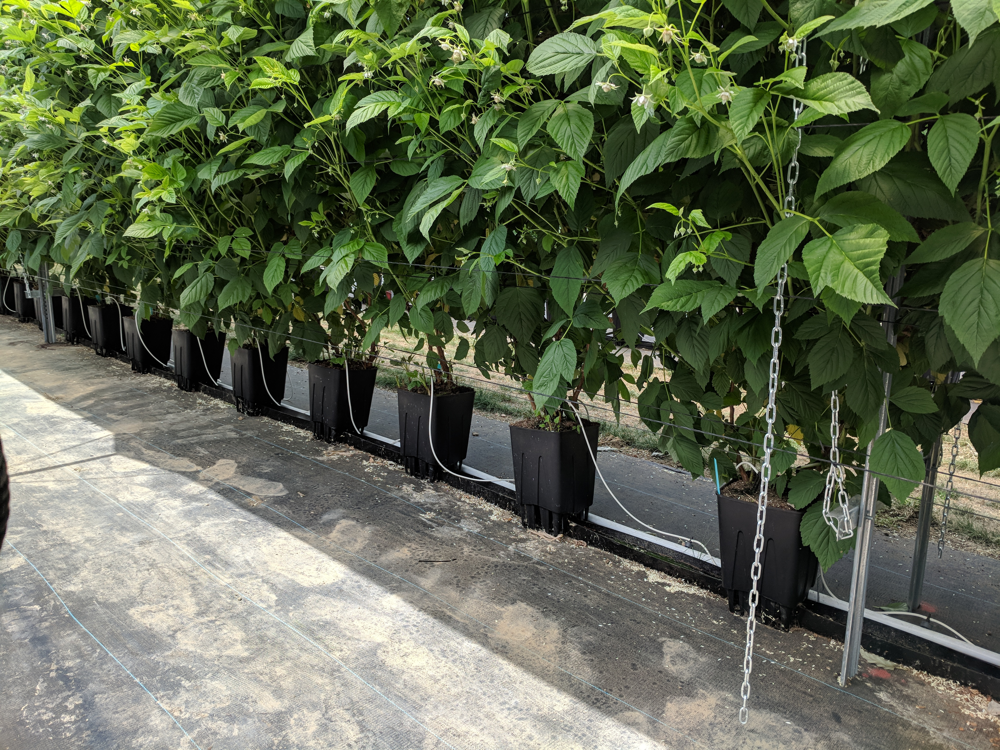
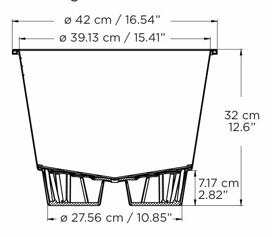
PlantLogic Lysimeter використовується для отримання чистої контрольної проби та порівняння води IN із дренажем OUT. Сам лізиметр не є pH/EC-датчиком.
Curated media містить UA-схему, яку попередній media-clean review визнав візуально непридатною для головної. Не підмінюємо її іншим зображенням.
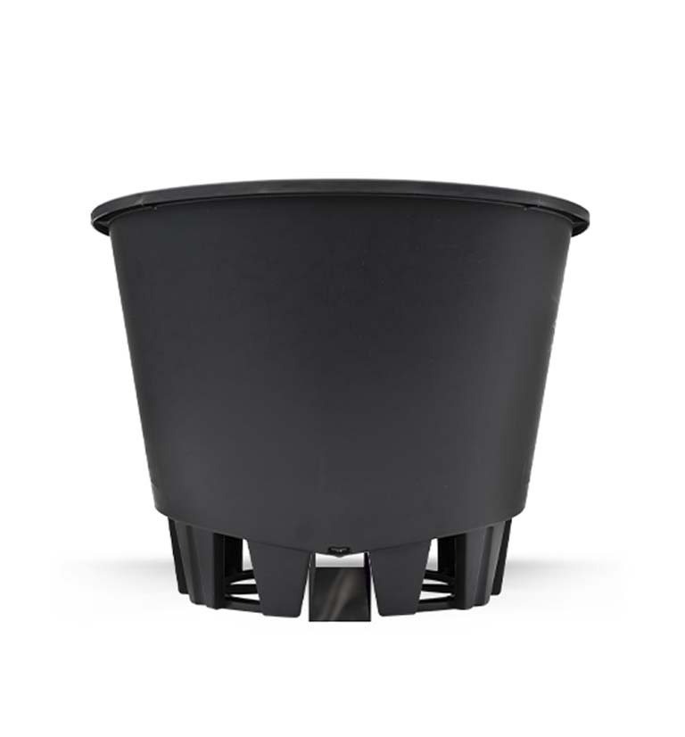
Product #1304125
Редакційний приклад того, як Garden подає продукт: через його технологічну роль у системі, а не через ціну чи магазинну плитку.
Культура, кількість рослин, формат вирощування, полив і контроль дренажу — цього достатньо, щоб почати предметний підбір.